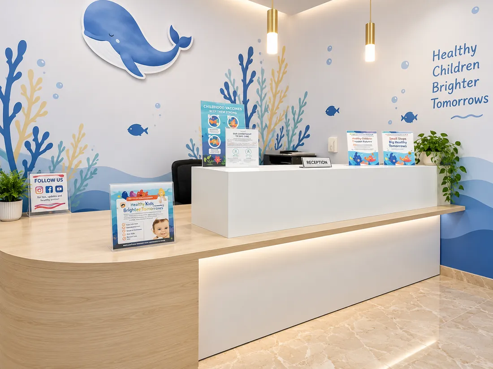
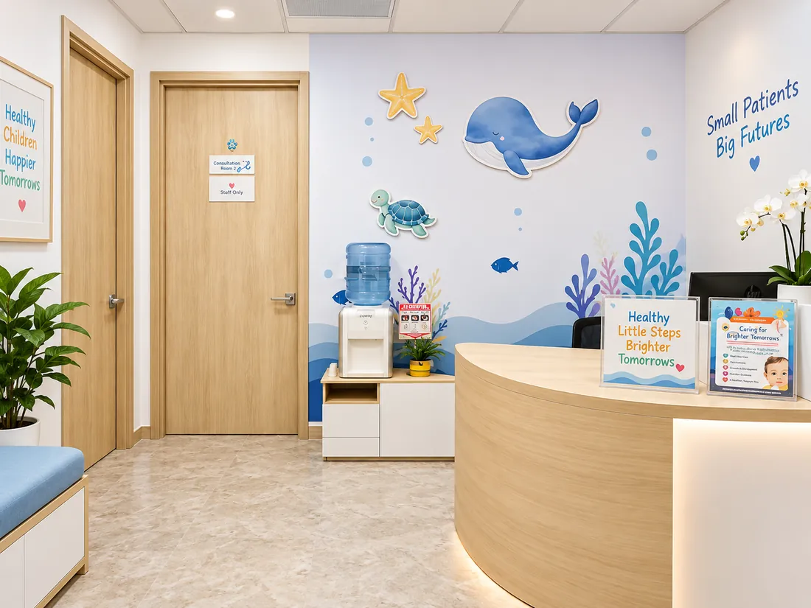
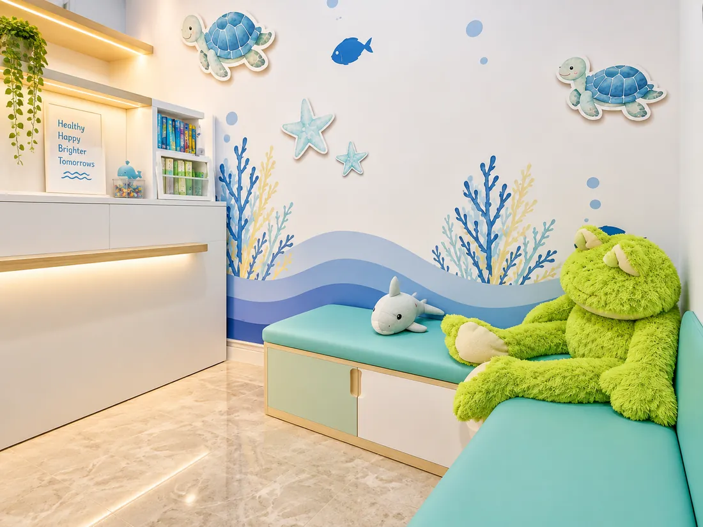
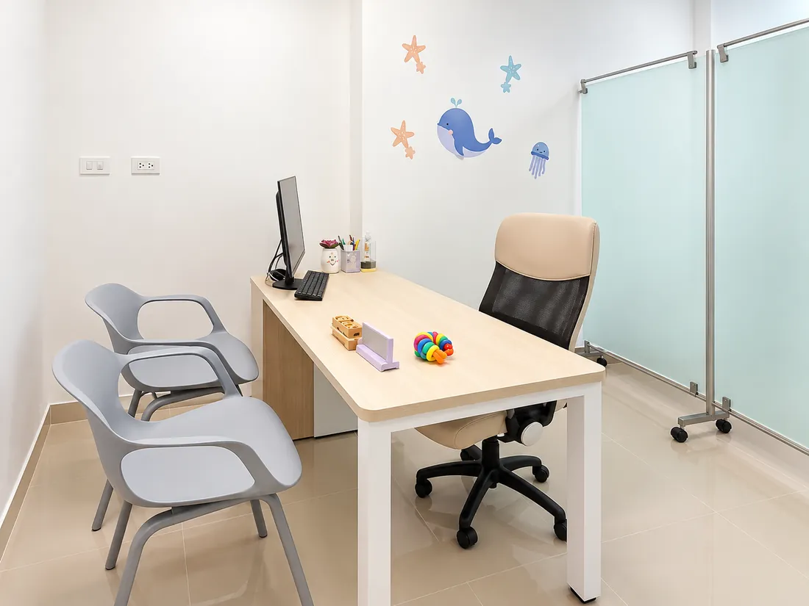
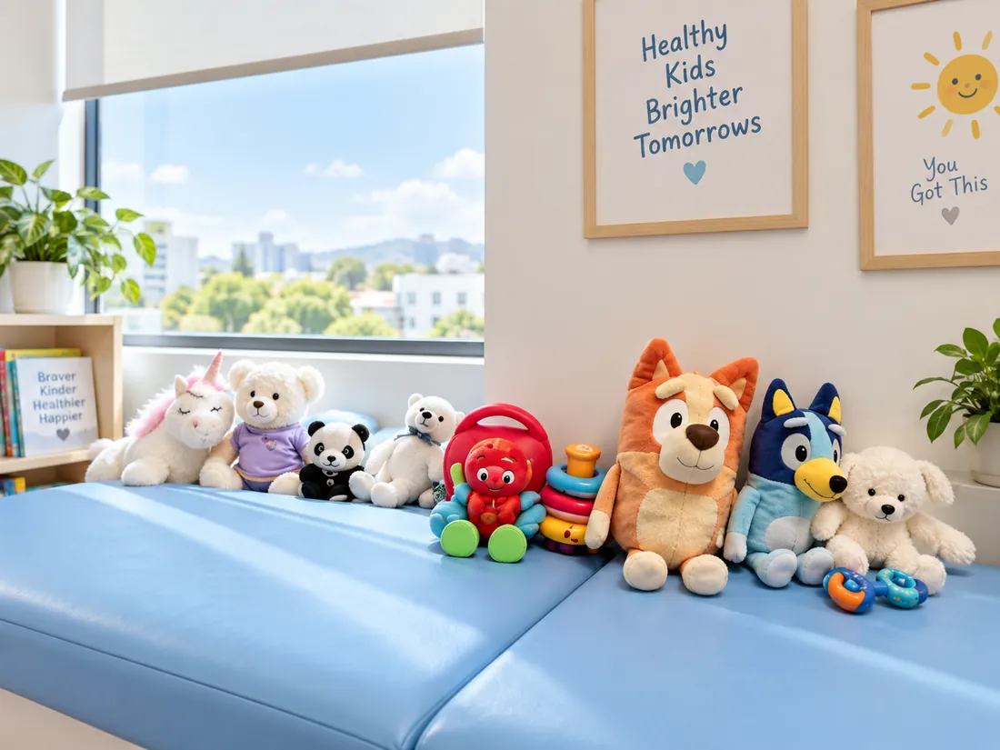

Un consultorio
con fondo de mar
La ballena, la tortuga, las estrellas y los corales están pintados en las paredes desde el primer día. No es decoración: es lo primero que mira un niño cuando entra, y casi siempre le gana al susto.

El recorrido, rincón por rincón
Así se ve por dentro, para que lleguen sabiendo qué esperar.

La recepciónAquí confirmamos los datos y se espera poco. El mar sigue por toda la pared.
La sala de esperaLa banca turquesa, las tortugas pintadas y Pepe esperando sentado.
La consultaDonde conversamos, revisamos los exámenes y armamos el plan con calma. La sala de examenLa camilla azul, custodiada por los peluches, y la jirafa pintada en la pared.
La sala de examenLa camilla azul, custodiada por los peluches, y la jirafa pintada en la pared.
Luz y ciudadLa otra camilla mira a la ventana. Los peques se distraen con la vista.La rana verde está aquí desde que el consultorio abrió sus puertas. Vive entre los corales y se deja abrazar durante el examen. Muchos peques vuelven preguntando por él antes que por mí — y así debe ser.
Cómo llegar
Estamos en el norte de Barranquilla, dentro del High Park Medical Center.
Calle 1C # 30-40, High Park Medical Center
Consultorio 129 · Barranquilla, Colombia
El edificio cuenta con parqueadero para pacientes. Confirma disponibilidad al agendar si llegas en carro.
Escribe por WhatsApp al +57 304 653 2006 y te confirmo el horario y las indicaciones previas.
Alcanzamos a registrar los datos sin apuro y tu peque conoce el lugar antes de empezar.
Horario de atención
| Lunes a jueves | 8:00 a. m. – 12:00 m. · 2:00 – 6:00 p. m. |
|---|---|
| Viernes | 8:00 a. m. – 12:00 m. |
| Sábado | 8:00 – 11:00 a. m. (según agenda) |
| Domingo y festivos | Cerrado |
Qué traer
- Carné de vacunas
- Exámenes o resúmenes de consultas previas
- Documento del menor y del acudiente
- Carné de la prepagada o póliza, si aplica
- Un juguete o manta de apego, si les ayuda
y si se les olvida algo, lo resolvemos ahí mismo
Los esperamos
Agenda por WhatsApp y te confirmo día, hora y todo lo que necesitan saber antes de venir.